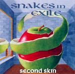

Acoustic, Harmonic & rather Celtic

Second Skin was released in December 1998 with Wild Boar Music. The songs show new influences. The album is still clearly folk, but in the covers as well as in the original material, the band digresses onto folkrock, pop and gospel too. Some of the tracks were spiced up with contributions of guest musicians taking care of a whiff of drum, percussion, flute and fiddle.
TrackList
Taboo or not Taboo
For those who want reflections on some ethical values. Is giving in to the flesh and other forbidden fruits not just that little spark of sunshine in a dull and grey existence?<br/> Drummer is Rohal 'El Fish' De Ridder.
The Raggle Taggle Gypsy
The well wed wench leaves man (old) and money (heaps) to run off with an all-singing, guitar playing gypsy. Isn't love beautiful?
The Fiddler's Tale
The villagers panic when hearing the demonic fiddle play of a traveller. For this track, we unleashed Guy Fletcher on the fiddle.
Angels on Sale
Some criticism on the futile attempts to buy a pure conscience. More Guy Fletcher in this song.
South Australia
PAAAARTYYYYY. With Peter Van Woensel as tropical rainforest and the band as an outrageous audience.
Young Master Dribble
An instrumental impression of the uncertain but feisty first steps of a toddler. Paul Van Laere on the flute.
Goodnight the Lord is Coming
A gospel... With support on djembe by Peter Van Woensel.
Blossoms a Rose
The musical arrangement of a love poem by the Irish poet W.B. Yeats. Used as an introduction of the next song.
Imaginary Stairs
Serves as a sequel of the former song. Written for Marc and Kate from the Cambridge Folk Festival security.
The Lord of the Dance
Traditional arranged by Sydney Carter, or is it his own creation?
Lakewood/The Triepmuir Hornpipe/Royal Belfast
The secret weapon of Snakes in Exile. Three Scottish tunes whistled on Peter's face.
Jumpin' Jack Flash
A Rolling Stones classic in an a-capella arrangement. Recorded at the BBC studios in London.
St. Patrick was a Gentleman
Whilst christianising Ireland, apparently St. Patrick banished all vermin from the Island. This legend has been the inspiration for the band's name, so it had to be on this album...
The Parting Glass
A traditional Irish farewell song performed regularly without PA after a successful concert. Sung for the first time on the same wedding party where the Dickless jig was written (see Songs and Salads).